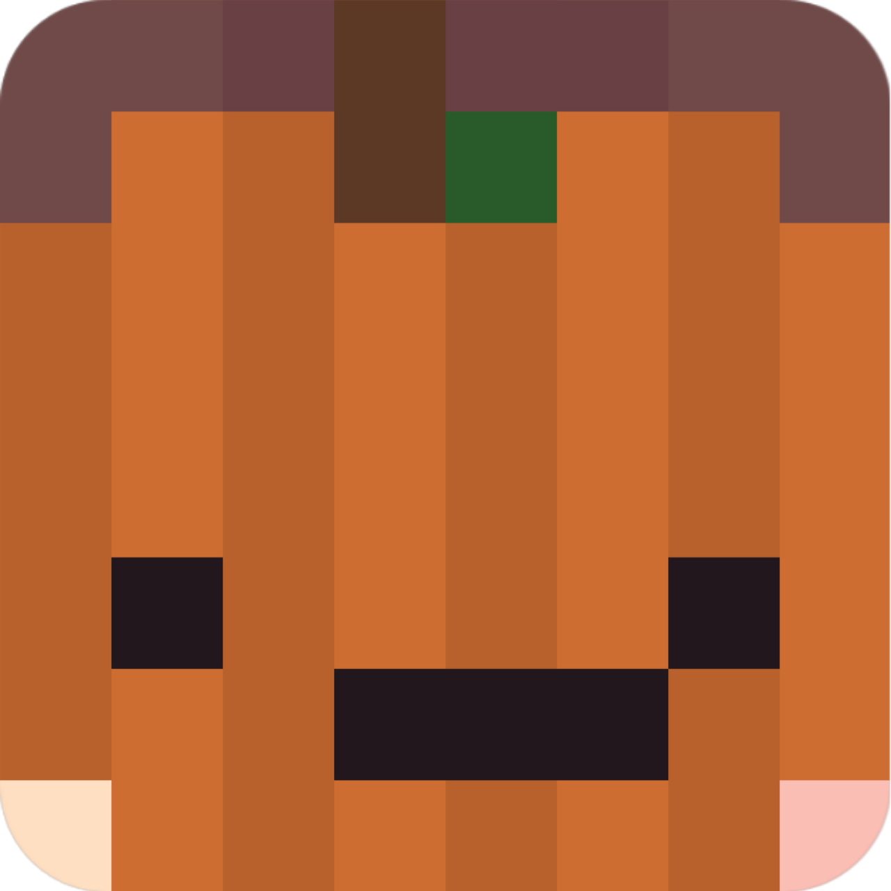

<!--
MomentariyModder Website 7.0.0 by MomentariyModder
The source code is available on GitHub!
-->

<!DOCTYPE html>
<html lang="en">
<head>
  <link rel="icon" href="../img/themes/active/favicon.png">
  <title>Situation on Modrinth | Blog | MomentariyModder</title>
  <meta name="viewport" content="width=device-width, initial-scale=1, maximum-scale=1" />
  <meta name="title" content="Situation on Modrinth | Blog | MomentariyModder">
  <meta name="description" content="Welcome to my website! I am MomentariyModder, or as my friends and acquaintances often call me, Modder. I'm 20 years old, and I'm from Belarus (a small country in Europe bordering Russia and Ukraine). I also like to create almost any content for Minecraft, that is: mods, maps, resource packs, servers.">
  <meta name="keywords" content="Minecraft, Mods, MomentariyModder">
  <meta name="theme-color" content="#4bb4f1">


  <script src="https://code.jquery.com/jquery-3.3.1.min.js"></script>
  <script src="https://cdn.jsdelivr.net/npm/handlebars@latest/dist/handlebars.js"></script>
  <script src="https://mcapi.us/scripts/minecraft.min.js"></script>
  <script src="../js/main.js"></script>
  <script src="../config.js"></script>
  <script src="../js/lightbox.min.js"></script>
  <script src="https://cdn.jsdelivr.net/npm/@widgetbot/crate@3" async defer>
  new Crate({
    server: '696094539823448085',
    channel: '1156033421940891688'
  })
  </script>
  
  <script>tosAgreed = true</script>
  
  <link rel="stylesheet" href="https://cdnjs.cloudflare.com/ajax/libs/font-awesome/6.7.1/css/all.min.css"/>
  <link rel="stylesheet" href="../css/style.css">
  <link rel="stylesheet" href="../config.css">
  <link href="../css/lightbox.css" rel="stylesheet" media="all">

</head>


<body>

  <div id="target"></div>

  <script id="template" type="text/x-handlebars-template">

  <header>
    <div class="hero" id="hero">
      <a href="#!"><h1 style="padding-top: 3%;"></h1></a>
    <p> </p>
    <div class="news-card" align="center">
	  <a href="../" class="btn"><i class="fa-solid fa-house"></i> Home</a>
      <a href="../blog" class="btn"><i class="fa-solid fa-newspaper"></i> Blog</a>
	  <a href="#links" class="btn"><i class="fa-solid fa-share"></i> Links</a>
    </div>
	<p> </p>
	</div>
  </header>
  
  <section class="dark" id="blog">
	<h1><i class="fa-solid fa-newspaper"></i> Blog</h1>
    <div id="news">
	<div class="news-card" align="center">
	<a>MISC</a><br>
	<a href="../img/blog/situation-on-modrinth/head.png" data-lightbox="roadtrip"></a>
	<h1 align="center">Situation on Modrinth</h1>
	<i>03.10.2025, 05:00</i><br>
	</div>
	<p>
	Hello to all readers of this post!<br><br>
	Today, I would like to comment on the situation that occurred on October 1 in Modrinth. Let's go.<br><br>
	<h3>The essence of the situation</h3>
	The Modrinth team received an email from Roskomnadzor (the Federal Service for Supervision of Communications, Information Technology and Mass Media, or, more simply, the main instrument of internet censorship in Russia and beyond) demanding that LGBT+ content be removed from the platform, otherwise Modrinth would be blocked. As far as I understand, the message included links to four projects. The Modrinth team decided to comply with the demand and removed those four projects from access for the Russian region.<br>
	(<a href="https://modrinth.com/news/article/russian-censorship">Post from the Modrinth team</a>)<br><br>
	It is important to note that in Russia, the LGBTQ+ community is recognised as an ‘extremist movement’. To put it simply, it is banned there. Don't ask how this is possible; there has been no justice or fairness there for a long time. And yes, in Russia, you can be fined or even imprisoned if you demonstrate your involvement in the LGBTQ+ community.<br><br>
	<h3>Community reaction</h3>
	This provoked a rather harsh reaction. Imagine a platform that adheres to the principles of supporting the LGBT+ community (part of the Modrinth team are members of this community) starting to block content related to this community in the region at the request of a homophobic government. You have to agree that the situation is ambiguous, to say the least, but it still smacks of hypocrisy. <br><br>
	The reaction was harsh, but it manifested itself in different ways. Developers Ender IO and Industrial Foregoing removed their projects from Modrinth in protest. The authors of the mod JellySquid launched a protest by adding banners with LGBTQ+ content, also in protest. <br><br>
	As a result of the reactions and protests, the Modrinth team reversed its decision to comply with the demands of homophobes in Russia and began preparations to block the platform soon. They also promised not to comply with the demands of any government if they go against the principles of the platform.<br>
    (<a href="https://modrinth.com/news/article/standing-by-our-values">Post from the Modrinth team</a>)<br><br>
	The authors of the removed projects also restored them on 2 October.<br><br>
	<h3>My reaction</h3>
	But let me say in advance that I am not from Russia and do not live there. However, I actively follow the situation there, which is why I am saying this.<br><br>
	At first, I was surprised and wrote the following post on their forum channel ‘community-support’ entitled ‘Russian Censorship’. Text of the post:<br>
	"Removing LGBT+ related content will not save you from being blocked in Russia. Plus, you may be forced to start “localisation”, a procedure whereby the company that is required to carry out this procedure must open an office in Russia and set up servers on which user data with Russian citizenship will be stored. And even that may not save you. Russia has blocked Discord, Cloudflare, and YouTube. But most users from there simply use various tools to bypass the block (Zapret, for example) and VPNs. Therefore, I recommend that you start encouraging your users from Russia to use VPNs." I subsequently forwarded this text to a thread discussing the situation. <br><br>
	Now, more details about what is written there:<br>
	1. In Russia, various social networks (Instagram, Facebook, and Twitter/X), messengers (Discord, Viber, and Snapchat), the gaming platform itch.io, the internet service CloudFlare, and YouTube have been blocked for a long time. Such blockages have led to most users from Russia using various workarounds (Zapret, for example) and VPNs (although most of them have already been blocked). That is why I believe that most users from the Russian Federation will use VPNs if Modrinth is blocked. It should be noted that due to the blocking of Cloudflare in Russia, Modrinth and CurseForge are no longer available to some providers and regions.<br>
	2. If the Modrinth team complied with the Russian Federation's request, it would have to comply with their subsequent requests. For example: now they have demanded that four projects be removed and sent their links, and then they will send a whole list or publish more links and projects to be blocked in their registry. There is also a bill in Russia that would require foreign companies to undergo a ‘landing’ procedure. This procedure involves opening a legal entity (and office) in the Russian Federation, where subsequent demands from the Russian government will be sent. You may also be required to have servers in the Russian Federation where the data of Russian citizens will be stored. This is done so that the Russian security services can obtain data much more easily than sending requests abroad. <br><br>
	And I assure you that this would have been the case if the Modrinth team had decided to stick to their original decision. This also sets a precedent: if the demands of one government are met, then the demands of others will also have to be met. And these demands can vary, from blocking certain content to transferring users' personal data.<br><br>
	That is why I took an active part in discussing this situation in the thread, as well as in the protest started by JellySquid. You may have noticed this from my posts on Discord and Telegram. After I learned about the reversal of the initial decision, I reacted positively and cancelled my protest actions, which I will remind you of:<br>
	- Replacing project banners with a banner featuring the LGBT+ flag<br>
	- Suspending updates to my projects on Modrinth. (which don't exist yet... I'm really ashamed of this, I'm kind of burnt out)<br><br>
	<h3>Conclusion</h3>
	As I wrote above, the Modrinth team reversed its decision to censor content at the request of the homophobic Russian government and its agencies, promising that it would no longer comply with the demands of any government if it did not align with Modrinth's principles. I am glad that the Modrinth team changed its decision; this will only lead to better things. They really need to restore their reputation, and I hope they succeed. <br><br>
	Thank you to everyone who read this entire post. It is important for me to speak out about the frankly poor decisions made by the platforms I use. I have been with Modrinth since beta testing. Recently, the platform has not been in the best condition, but I think everything will be fine.<br><br>
	Good luck!
	</p>
	<p align="center"><i class="fa-solid fa-user"></i> MomentariyModder (Author)</p>
	</div>
	<p> </p>
	<div id="news">
	<div class="news-card" align="center">
	<h2>Comments will be back soon!</h2>
    </div>
    </div>	
  </section>
  <section class="dark">
	<div class="news-card" align="center">
	<a href="../blog/important-announcements" class="btn2"><i class="fa-solid fa-arrow-left"></i> Previous post</a>
	<a href="../blog" class="btn2"><i class="fa-solid fa-newspaper"></i> Back to Blog</a>
	<!-- <a href="../blog/coming-soon" class="btn2"><i class="fa-solid fa-arrow-right"></i> Next post</a> -->
	</div>
  </section>
  
  <section class="light">
    <h1><i class="fa-solid fa-share"></i> Links</h1>
    <div id="links" align="center">
	  <a href="https://discord.com/invite/9XqgjRd"></a> 
	  <a href="https://t.me/momentariymoddertgk"></a> 
	  <a href="https://twitter.com/momentariymoder"></a>	 
	  <a href="https://bsky.app/profile/momentariymodder.bsky.social"></a>
	  <a href="https://www.curseforge.com/members/momentariymodder"></a> 
	  <a href="https://modrinth.com/user/momentariymodder"></a> 
	  <a href="https://github.com/MomentariyModder"></a>
	  <a href="https://patreon.com/momentariymodder"></a>
	  <a href="https://boosty.to/momentariymodder"></a>
	  <a href="https://ko-fi.com/momentariymodder"></a>
	  <a href="https://www.buymeacoffee.com/momentariymodder"></a>
	  <a href="https://www.donationalerts.com/r/momentariymodder"></a>
    </div>
  </section>
  
  
  <footer>
    <a>&copy; {{server_port}} {{server_name}}. All Rights Reserved.</br>{{server_name}} is not affiliated with or endorsed by Mojang Studios or Microsoft<br>{{server_ip}}</a>
	<a></a>
	
  </footer>
  </script>
  <script src="../js/license.js"></script>
  
</body>
</html>